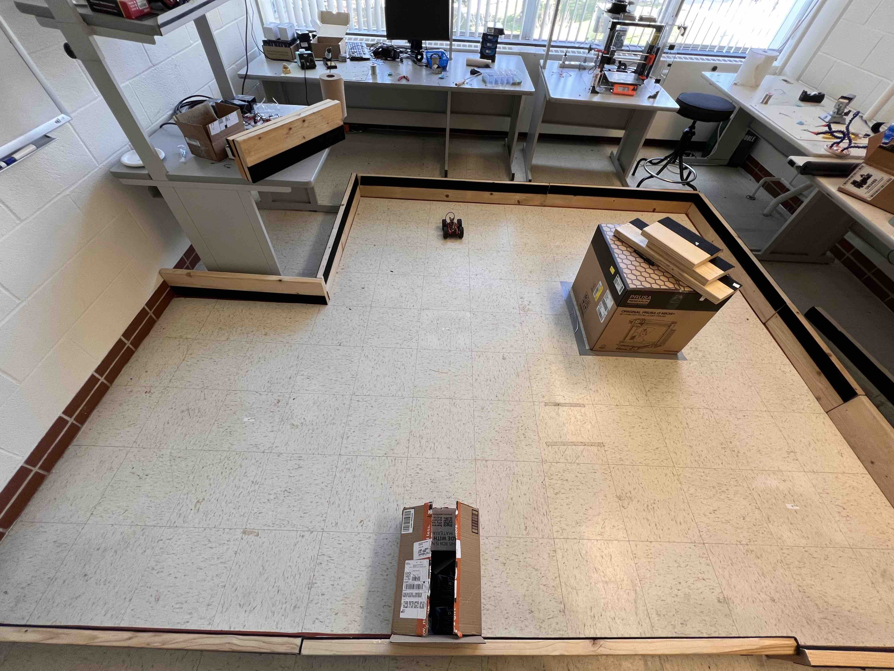
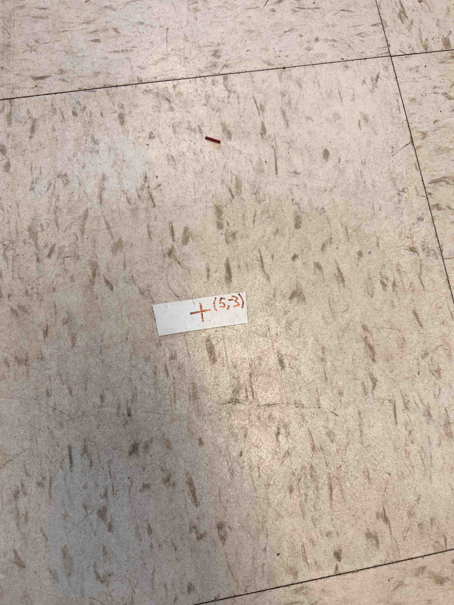
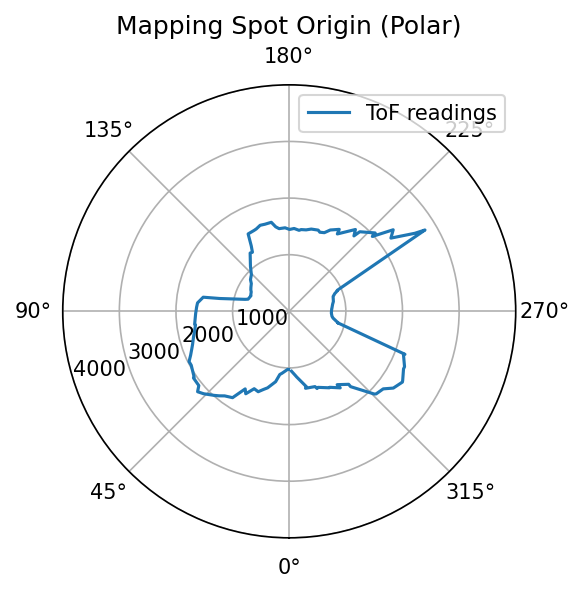
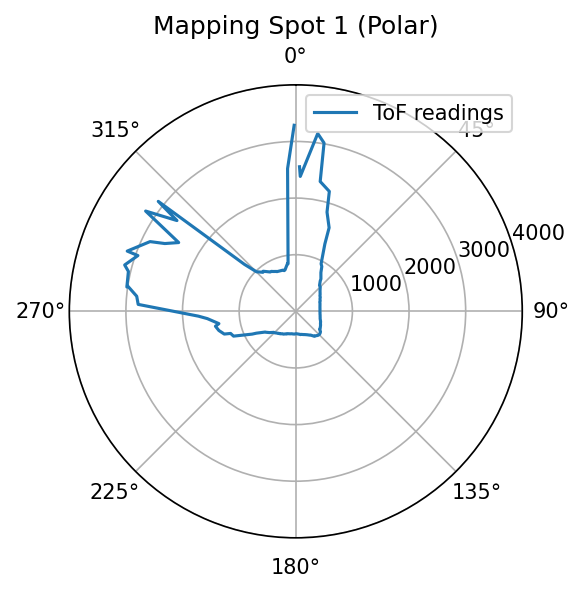
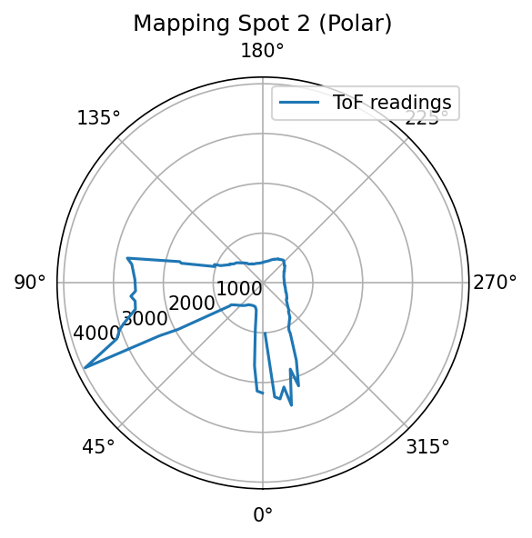
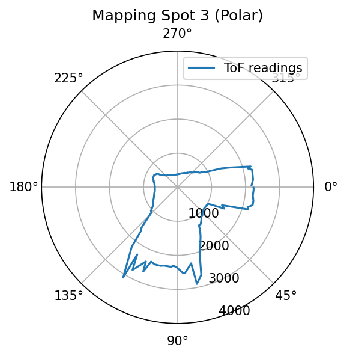
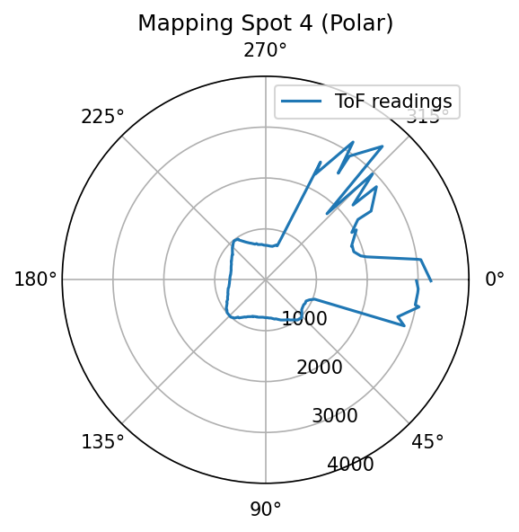
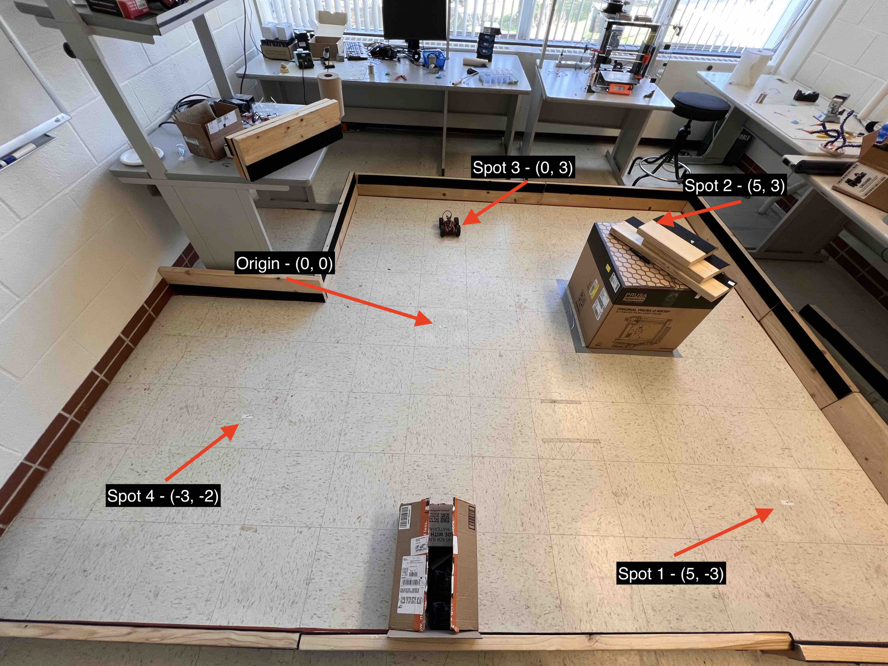

The purpose of this lab is to build a 2D map of a static room. The "room" is set up in the front room of the lab with cardboard boxes and wood boards. The robot will be manually placed on multiple spots of the room, and it will collect distance readings (from ToF sensor) when turning around in place. Data will be merged together to create the map of the whole room. At the end, a line-based map will be created from the merged map.
PID control for turning
At this point, the robot has already been wired up with ToF sensors, an IMU, and motor drivers connected to the motors. Hardware-wise, the robot is capable of performing all the tasks in this lab. All the work that is left to do is software programming.
The first task is to have the robot turning around in place in small, accureate increments. Later on, the robot will be logging the ToF sensor reading and the gyroscope accumulated orientation at each increment. Because I have completed task B in the PID lab, PID control of turning is simply a matter of slowly incrementing the set point. The simple code snippet attached below shows clearly how this is done.
case mapping:
// get current orientation
current_orientation = my_imu.get_ang().yaw_gyr;
// pid compute
orientation_controller.compute();
// feed updated turn speed into the motors
my_motors.car_turn(turn_speed, -turn_speed);
// increment the set orientation
if (delay_nonblocking(50)) set_orientation += 3;
Code is simple, and it works well. There is a 50 ms non-blocking delay between each 3-degree increment to simulate the sampling time of the ToF sensor.
Confirm the performance of PID controller
The performance of the PID controller can be confirmed by combining the two methods below:
- Maintaining an array of the latest 10 differences data between the set point and the current orientation. Only increment the set point when all elements in the array are less than the step size.
- Have the robot turning in place and visually confirm that it is not making progress too slow, not oscillating, and it is not stuck.
The first method can be realized by the code snippet below.
// maintain lookback array
orientation_difference[lookback_idx++] = abs(set_orientation - current_orientation);
if (lookback_idx == lookback_samples)
lookback_idx = 0;
max_diff = orientation_difference.find_max();
if (max_diff less than step_size) set_orientation += step_size;
The video below shows the second confirmation. The robot is turning in place without much shifting. It is making progress pretty quickly (120 data points collected for ~30s) even with orientation checking. It does not have much oscillation or overshooting, meaning that my PID control is working well.
PID orientation control with robot turning in place.PID parameters
I am using the following PID parameters:
double kp = 30;
double ki = 2e-3;
double kd = 25;
These parameters are very close to what I used in Lab 6 by following the two heuristics the instructor discussed in lecture. kp and kd are tuned lower to further avoid overshooting because the robot in this lab is supposed to turn much slower than that in Lab 6.
Obstacles setup and data collection
The map below shows the physical setup of the "room."
 Physical setup of the map and obstacles.The robot will be collecting data in designated spots. The spots are marked with white tape with their corresponding coordinates. There is also a spot corresponding to the origin. The picture below shows one such spot with the coordinate (5, -3).
 Picture of a label. Robot will be turning in place on these labeled spots and collect mapping data.From the programming aspect, there are minimum changes made. The robot would take a time of flight measurement when the robot is close enough to the set point. It logs down the distance measurement as well as the gyroscope calculated yaw angle. Then it changes the set point and repeats untill it has turned over 360 degrees. After that, the robot sends back both arrays to my laptop for data visualization with the help of my debugging scripts. The video below shows my robot collecting data in the lab in one of the spots.
My robot collecting data in the map.Post-processing: plotting data
Post-processing: plotting data
Because I am using orientation PID control, I will need to trust the orientation from integrated gyroscope values. The robot's starting orientations are different for different spots. They are plotted with the same viewer's orientation to correspond to the map during sanity checking. When we are doing data processing later, an offset to the gyroscope angle can be easily added to make those orientations aligned.
Because the robot is turning in place and the distance to wall is measured, it will be good to do quick visualizations by making polar plots for sanity checking. Pictures below shows both polar plots for each spot where measurements are taken, and a labeled picture of the map to show where each spot is located as well as their coordinates.
     Polar plots at each spot. The viewing orientations are aligned.  Real map set up with labels to show where the spots are.Sanity checking shows better than expected consistency between the measured polar plot and the real-world setup. This gives me great confidence to proceed in this lab.